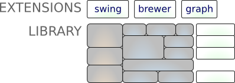

Architecture¶
Having an understanding of how the GeoTools library is structured is helpful for sorting out what jars you need for your application.
This page introduces you to the parts of the GeoTools library and how they fit together. By including only the jars you need you can select just the right amount of GeoTools for your next project.
GeoTools Library¶
The GeoTools library forms a software “stack” with each jar building on the ideas and concepts defined in the previous one.

Each layer of the “stack” is built on the ones below it:
- To use Referencing you need gt-opengis, gt-referencing and gt-metadata
- To use Data you need gt-api, gt-data, gt-main, jts, gt-opengis, gt-referencing, gt-opengis, gt-metadata
The maven tool can calculate the jars you need, please see the Eclipse or Netbeans quickstart for an example use.
| Module | Purpose |
|---|---|
| gt-render | Implements of Java2D rendering engine to draw a map |
| gt-jdbc | Implements for accessing spatial database |
| gt-data | Implements for accessing spatial data |
| gt-xml | Implements of common spatial xml formats |
| gt-cql | Implements of Common Query Language for filters |
| gt-main | Implements filter, feature, etc... |
| gt-api | Definition of interfaces for working with spatial information |
| jts | Definition and implementation of Geometry |
| gt-coverage | Implementation for accessing raster information |
| gt-referencing | Implementation of co-ordinate location and transofrmation |
| gt-metadata | Implementation of identification and description |
| gt-opengis | Definition of interfaces for common spatial concepts |
GeoTools Plugins¶
GeoTools offers plug-ins to support additional data formats, different coordinate reference system authorities and so on.
| Module | JAR | Plugin |
|---|---|---|
| gt-render | ||
| gt-jdbc | gt-jdbc-db2 | Geometry in DB2 |
| gt-jdbc-h2 | Pure Java “H2” database | |
| gt-jdbc-mysql | Geometry in MySQL | |
| gt-jdbc-oracle | Oracle SDO Geometry | |
| gt-jdbc-postgis | PostgreSQL extension PostGIS | |
| gt-jdbc-spatialite | SQLite | |
| gt-jdbc-sqlserver | SQL Server | |
| gt-data | gt-shape | Shapefile read/write support |
| gt-wfs | WFS read/write support | |
| gt-arcsde | Communicate with ArcSDE | |
| gt-xml | ||
| gt-cql | ||
| gt-main | ||
| gt-api | ||
| jts | ||
| gt-coverage | gt-geotiff | GeotTIFF raster format |
| gt-arcgrid | arcgrid format | |
| gt-mif | MIF format | |
| gt-image | JPG, PNG, TIFF, GID formats | |
| gt-referencing | epsg-access | Official EPSG database in Access |
| epsg-hsql | Pure Java port of EPSG database | |
| epsg-wkt | Lightweight copy of EPSG codes | |
| epsg-postgresql | PostgreSQL port of EPSG database | |
| epsg-oracle | Oracle port of EPSG database | |
| gt-metadata | ||
| gt-opengis |
Usually at least one plug-in is needed for each layer for GeoTools to do something. As an example every time you use the referencing module please make sure you have an epsg plugin around (or the referencing module will not know that “EPSG:4326” is the world as we know it).
GeoTools Extensions¶
We have gone a bit further and implemented some interesting “extensions” on top of the GeoTools library. These extensions provide additional capabilities that are built on top of GeoTools using the spatial facilities of the library.
The extensions are independent of each other offering and may be of use in your application. Here is a brief listing of the extensions at the time of writing.
| JAR | Extension |
|---|---|
| gt-graph | Work with graph and network traversals |
| gt-validation | Quality assurance for spatial data |
| gt-wms | Web Map Server client |
| gt-xsd | Parsing/Encoding for common OGC schemas |
| gt-brewer | Generation of styles using color brewer |
XML¶
To support the xml module in GeoTools we have bundled up several XML schemas in JAR form (to prevent needing to download them from the internet each time they are needed). In addition these jars contain a generated Java data structure produced with the Eclipse Modelling Framework.
| JAR | Schema |
|---|---|
| net.opengis.ows | open web services schema |
| net.opengis.wfs | web feature service |
| net.opengis.wps | web processing service schema |
| net.opengis.wcs | web coverage service schema |
| net.opengis.wfsv | web feature service schema |
| org.w3.xlink | xlink schema |
These facilities are used by the xsd parser by way of a series of XSD plugins. These plugins indicating how to parse and encode additional content using Eclipse XSD library to parse XML schema documents and offer “bindings” showing how to parse and encode to Java classes such as String, Date, URL and Geometry.
| JAR | Bindings |
|---|---|
| gt-xsd-core | Basic types defined by XML schema |
| gt-xsd-fes | filter |
| gt-xsd-filter | filter (used by ogc cat and wfs) |
| gt-xsd-kml | keyhole markup language |
| gt-xsd-wfs | web feature service |
| gt-xsd-wps | web processing service |
| gt-xsd-gml3 | geographic markup language 3 |
| gt-xsd-gml2 | geographic markup language 2 |
| gt-xsd-ows | open web services |
| gt-xsd-wcs | web coverage service |
| gt-xsd-wms | web map service |
| gt-xsd-sld | style layer descriptor |
GeoTools Unsupported¶
There is also a number of “unsupported” plugins and extensions. These modules are not distributed by the project management committee as part of the GeoTools download, however they are available via maven or individual download.
| Unsupported | Purpose |
|---|---|
| gt-swt | Standard widget toolkit interactive map |
| gt-swing | Swing interactive map |
| gt-oracle | retired oracle support |
| gt-postgis | retired postgis support |
| gt-db2 | retired db2 support |
| gt-wps | Web Processing Service cient |
| gt-process | Job system for spatial data |